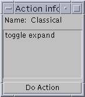
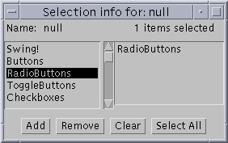
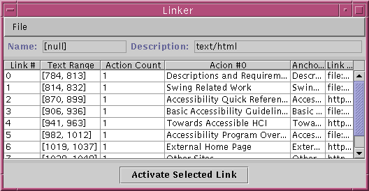

|
|
JavaTM Accessibility UtilitiesAccessibilityMonitor Example |
Java Accessibility Utilities |

The bulk of the window contains a table listing the PropertyChange events that is updated periodically as the events occur. The first column of the table contains the Accessible Name of the object which generated the event (these will often be blank as many objects [generally container objects] don't have Accessible names). The second column contains the name of the property which changed (generating the event). The third and fourth columns contain string representations of the old and new values (respectively) of that property.

Holding down the right-most mouse button on an event in either the first
or second row of the table will display a popup menu that provides options
for you to get additional accessible information from the object.
The first option will provide you with information similar to that provided
by the Ferret example. The second option
allows you to manipulate the AccessibleActions of the object, the third
option allows you to manipulate the AccessibleSelections of the object,
and the fourth option allows you to manipulate the AccessibleHypertext
links of the object. If you hold down the right-most mouse
button on either the third or fourth column, the same menu will appear
if and only if either the value (old or new) represents an Accessible object
itself (e.g. if the AccessibleChild property is the type of event, then
the event represents either the birth or death of an AccessibleChild of
the object which generated the event), and the panels which come up are
for that old or new Accessible object. You can bring up an AccessibilityPanel
without using the mouse by first selecting the table cell you are interested
in, and then choosing the AccessibilityPanel from the Panels menu.
|
Copyright © 1995-2001 Sun Microsystems, Inc. All Rights Reserved. Please send comments to: access@sun.com |
|